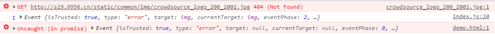
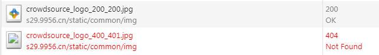

ES6系列-6-异步
ES6 新增了多个异步编程解决方案，相比之前的callback地狱回调，ES6处理异步更加优雅。
第一章 Promise
概述
promise是异步编程的一种解决方案，英语意思就是“承诺”, 简单说就是一个容器，里面保存着某个未来才会结束的事件。
Promise对象有以下两个特点：
- 对象的状态不受外界影响：Promise对象代表一个异步操作，有三种状态：pending（进行中）、fulfilled（已成功）和rejected（已失败）
只有操作结果可以影响，其他手段无法改变。 - 一旦状态改变，就不会再变，任何时候都可以得到这个结果：只要状态改变，改变后的状态是凝固的，不会再变了，会一直保持这个结果，无论什么时候去添加回调函数，都会立即得到这个结果，这与事件（Event）完全不同，事件的特点是，如果你错过了它，再去监听，是得不到结果的。
优缺点
- 优点：有了Promise对象，就可以将异步操作以同步操作的流程表达出来，避免了层层嵌套的回调函数。
- 缺点：
1）无法取消Promise，一旦新建它就会立即执行，无法中途取消。
2）如果不设置回调函数，Promise内部抛出的错误，不会反应到外部。
3）当处于pending状态时，无法得知目前进展到哪一个阶段。
ES6规定，Promise对象是一个构造函数，用来生成Promise实例。
基本用法
我们用promise封装一个异步请求图片的方法：
function loadImageAsync(url) {
return new Promise(function(resolve, reject) {
const image = new Image();
image.onload = function() {
resolve(image);
};
image.onerror = function(err) {
reject(err);
};
image.src = url;
});
}
Promise实例生成以后，可以用then方法分别指定resolved状态和rejected状态的回调函数。then方法可以接受两个回调函数作为参数。第一个回调函数是Promise对象的状态变为Resolved时调用，第二个回调函数是Promise对象的状态变为Reject时调用（可选）。
loadImageAsync("http://s29.9956.cn/static/common/img/crowdsource_logo_200_200.jpg").then((res)=>{
console.log(res)
},(err)=>{
console.log(err)
})
也可以通过catch方法进行改造：
loadImageAsync("http://s29.9956.cn/static/common/img/crowdsource_logo_200_200.jpg").then((res)=>{
console.log(res)
}).catch((err)=>{
console.log(err)
})
Promise不是新的语法功能，而是一种新的写法，允许将回调函数的嵌套，改成链式调用。
我们也可以这样写：
const myPromise=loadImageAsync("http://s29.9956.cn/static/common/img/crowdsource_logo_200_2002.jpg");
myPromise.then((res)=>{
console.log(res)
})
myPromise.catch((err)=>{
console.log(err)
})
控制台会有一个报错：

这就是上述优缺点板块中提到的缺点2，如果不设置回调，Promise内部抛出的错误，不会反应到外部。
我们也可以“等会”在去获取promise的结果：
const myPromise=loadImageAsync("http://s29.9956.cn/static/common/img/crowdsource_logo_200_2002.jpg");
setTimeout(()=>{
myPromise.then((res)=>{
console.log(res)
}).catch((err)=>{
console.log(err)
})
},2000)
通过控制台可以发现，刚开始会有一个报错，但2s后报错就会消失，打印结果同上。这就说明promise实例中确实“保存”了异步的结果，且状态是凝固的，无论什么时候去添加回调函数，都会立即得到这个结果。
执行顺序
const myPromise=new Promise((resolve, reject)=>{
console.log("Promise")
resolve();
})
myPromise.then(()=>{
console.log("resolve")
})
console.log('Hi!');
结果依次输出："Promise" "Hi!" "resolve"。解释：Promise 新建后立即执行，所以首先输出的是Promise。然后，then方法指定的回调函数，将在当前脚本所有同步任务执行完才会执行，所以resolved最后输出。
Promise.prototype.finally()
finally方法用于指定不管 Promise 对象最后状态如何，都会执行的操作。该方法是 ES2018 引入标准的。
loadImageAsync("http://s29.9956.cn/static/common/img/crowdsource_logo_200_2002.jpg").then((res)=>{
console.log(res)
}).catch((err)=>{
console.log(err)
}).finally(() => {
console.log("run over")
});
Promise.all()
Promise.all方法用于将多个 Promise 实例，包装成一个新的 Promise 实例，仍以异步加载图片为例：
const myPromise1=loadImageAsync("http://s29.9956.cn/static/common/img/crowdsource_logo_200_201.jpg");
const myPromise2=loadImageAsync("http://s29.9956.cn/static/common/img/crowdsource_logo_200_200.jpg");
Promise.all([myPromise1, myPromise1]).then((res)=>{
console.log(res)
}).catch((err)=>{
console.log("加载都失败了",err)
})
只有myPromise1、myPromise2的状态都变成fulfilled（成功），Promise.all的状态才会变成fulfilled，此时myPromise1、myPromise2的返回值组成一个数组，传递给Promise.all的回调函数。
只要myPromise1、myPromise2之中有一个被rejected，pPromise.all的状态就变成rejected，此时第一个被reject的实例的返回值，会传递给Promise.all的回调函数
如果myPromise1或者myPromise2有自己的reject回调处理，那么将不会触发Promise.all的回调函数
const myPromise1=loadImageAsync("http://s29.9956.cn/static/common/img/crowdsource_logo_200_201.jpg").catch(()=>{ console.log("myPromise1 失败了") }); const myPromise2=loadImageAsync("http://s29.9956.cn/static/common/img/crowdsource_logo_200_200.jpg"); Promise.all([myPromise1, myPromise2]).then((res)=>{ console.log(res) }).catch((err)=>{ console.log("加载都失败了",err) })运行结果为：
'myPromise1 失败了' (2) [undefined, img]Promise.all方法接受一个数组作为参数，myPromise1、myPromise2、myPromise3都是 Promise 实例，如果不是，那么将会在Promise.resolve方法中将原数据返回（是否执行resolve方法依旧取决于其他实例共同的结果）
Promise.race()
Promise.race方法同样是将多个 Promise 实例，包装成一个新的 Promise 实例，与Promise.all 不同的是只要myPromise1、myPromise2之中有一个实例率先改变状态，Promise.race的状态就跟着改变。那个率先改变的 Promise 实例的返回值，就传递给Promise.race的回调函数。
const myPromise1=loadImageAsync("http://s29.9956.cn/static/common/img/crowdsource_logo_200_202.jpg");
const myPromise2=loadImageAsync("http://s29.9956.cn/static/common/img/crowdsource_logo_200_200.jpg");
Promise.race([myPromise1, myPromise2]).then((res)=>{
console.log(res)
}).catch((err)=>{
console.log("加载都失败了",err)
})
//结果为：<img src="http://s29.9956.cn/static/common/img/crowdsource_logo_200_200">
Promise.resolve()
有时需要将现有对象转为 Promise 对象，Promise.resolve方法就起到这个作用。
1） 参数为 Promise 实例
Promise.resolve将不做任何修改、原封不动地返回这个实例。
2）参数是一个thenable对象
thenable对象指的是具有then方法的对象，比如下面这个对象：
const thenable = {
then: (resolve, reject)=> {
resolve(42);
}
};
const p = Promise.resolve(thenable);
p.then((value)=> {
console.log(value); // 42
});
3）参数不是具有then方法的对象，或根本就不是对象
const p = Promise.resolve('Hello');
p.then((s)=>{
console.log(s)
});
由于字符串Hello不属于异步操作（判断方法是字符串对象不具有 then 方法），返回 Promise 实例的状态从一生成就是resolved，所以回调函数会立即执行。Promise.resolve方法的参数，会同时传给回调函数。
4）不带有任何参数
Promise.resolve方法允许调用时不带参数，直接返回一个resolved状态的 Promise 对象。
所以，如果希望得到一个 Promise 对象，比较方便的方法就是直接调用Promise.resolve方法
const p = Promise.resolve();
p.then(()=> {
console.log("resolve")
});
//输出 resolve
我们再看下执行顺序：
setTimeout(()=> {
console.log('three');
}, 0);
Promise.resolve().then(()=> {
console.log('two');
});
console.log('one');
依次输出：one two three 解释：setTimeout(fn, 0)在下一轮“事件循环”开始时执行，Promise.resolve()在本轮“事件循环”结束时执行，console.log(‘one’)则是立即执行，因此最先输出。
Promise.reject()
Promise.reject(reason)方法也会返回一个新的 Promise 实例，该实例的状态为rejected。该方法的参数，会原封不动地作为reject的理由，变成后续方法的参数。这一点与Promise.resolve方法不一致：
const thenable = {
then: (resolve, reject)=> {
resolve(42);
}
};
const p1 = Promise.reject(thenable);
const p2 = Promise.reject("hello");
const p3 = Promise.reject();
p1.catch((err)=>{
console.log(err);//{then: ƒ}
});
p2.catch((err)=>{
console.log(err);//hello
});
p3.catch((err)=>{
console.log(err);//undefined
});
第二章 Generator
generator的英语意思就是“发动机”, Generator函数是ES6提供的一种异步编程解决方案。语法行为与传统函数完全不同。
理解 Generator
- 语法上，可以把它理解成，Generator 函数是一个状态机，封装了多个内部状态。
- 形式上，Generator函数是一个普通函数，但是有两个特征：
function关键字与函数名之间有一个星号；
函数体内部使用yield语句，定义不同的内部状态（yield语句在英语里的意思就是“产出”）
function* helloWorldGenerator() { console.log("start"); yield 'hello'; yield 'world'; return 'ending'; }Generator 函数的调用方法与普通函数一样，也是在函数名后面加上一对圆括号。不同的是，调用 Generator 函数后，该函数并不执行，返回的也不是函数运行结果，而是一个指向内部状态的指针对象（遍历器对象:Iterator Object）。
var hw = helloWorldGenerator(); //必须先调用一下这个函数,但此时函数并不会执行。 //只有通过next方法才会执行。调用遍历器对象的next方法，使得指针移向下一个状态，直到遇到下一个yield表达式（或return语句，每个函数都有一个隐藏的
return undefined语句）为止。hw.next() // "start"；此时才会执行函数体，遇到yield停止 //{ value: 'hello', done: false } hw.next() // { value: 'world', done: false } hw.next() // { value: 'ending', done: true } hw.next() // { value: undefined, done: true }yeild 语句
由于 Generator 函数返回的遍历器对象，只有调用next方法才会遍历下一个内部状态，所以其实提供了一种可以暂停执行的函数。yield表达式就是暂停标志。
yield表达式后面的表达式，只有当调用next方法、内部指针指向该语句时才会执行。
yield表达式与return语句既有相似之处，也有区别：
1）相似之处：都能返回紧跟在语句后面的那个表达式的值。
2）不同之处：yield，函数暂停执行，下一次再从该位置继续向后执行，而return语句不具备位置记忆的功能；
一个函数中只能执行一次return语句，但是可以执行多次yield表达式。Generator 函数可以返回一系列的值，因为可以有任意多个yield。也可以说 Generator 生成了一系列的值，这也就是它的名称的（“生成器”）来历。Generator 函数可以不用yield表达式，这时就变成了一个单纯的暂缓执行函数。
function* helloWorldGenerator() { console.log("Hello world") } var hw = helloWorldGenerator(); setTimeout(()=>{ hw.next() },1000)yield表达式只能用在 Generator 函数里面，用在其他地方都会报错。
与Iterator接口的关系
我们知道，任意一个对象的Symbol.iterator方法，等于该对象的遍历器生成函数，调用该函数就会返回该对象的一个遍历器对象。由于Generator函数就是遍历器生成函数，因此可以把Generator赋值给对象的Symbol.iterator属性，从而使得该对象具有Iterator接口。
const obj={}
obj[Symbol.iterator]= function* (){
yield '1';
yield '2';
yield '3';
}
for (let x of obj) {
console.log(x);
//1
//2
//3
}
console.log([...obj]);// ["1", "2", "3"] ,只有具有Iterator接口才可以通过扩展运算符转化成数组
Generator 函数执行后，返回一个遍历器对象。该对象本身也具有Symbol.iterator属性，执行后返回自身。
function* gen(){
}
const g=gen();
console.log(g[Symbol.iterator]() === g); //true
next方法的参数
yield表达式本身没有返回值，或者说总是返回undefined。next方法可以带一个参数，该参数就会被当作上一个yield表达式的返回值
function* f() {
for(var i = 0; true; i++) {
console.log("i value is: " + i)
var reset = yield i;
//每次next方法，遇到yield就结束了，下次再执行next时，从此处开始
if(reset) {
i = -1;
}
}
}
var g = f();
g.next() // i value is: 0 { value: 0, done: false }
g.next() // i value is: 1 { value: 1, done: false }
g.next(true) // i value is: 0 { value: 0, done: false }
// 传入参数true，执行next方法时，从上一个yield表达式开始，此时reset的返回值将为true，那么i被重置为-1
// 再执行一次+1操作变为0,于是就输出了 i value is: 0， 返回值为{ value: 0, done: false }
这个功能有很重要的语法意义。Generator 函数从暂停状态到恢复运行，它的上下文状态（context）是不变的。通过next方法的参数，就有办法在 Generator 函数开始运行之后，继续向函数体内部注入值。也就是说，可以在 Generator 函数运行的不同阶段，从外部向内部注入不同的值，从而调整函数行为。
for…of循环
for…of循环可以自动遍历 Generator 函数时生成的Iterator对象，且此时不再需要调用next方法。
除了for…of循环以外，扩展运算符（…）、解构赋值和Array.from方法内部调用的，都是遍历器接口。它们都可以将 Generator 函数返回的 Iterator 对象，作为参数。
function* numbers () { yield 1 yield 2 return 3 yield 4 } // 扩展运算符 [...numbers()] // [1, 2] // Array.from 方法 Array.from(numbers()) // [1, 2] // 解构赋值 let [x, y] = numbers(); x // 1 y // 2 // for...of 循环 for (let n of numbers()) { console.log(n) } // 1 // 2
Generator.prototype.throw()
Generator 函数返回的遍历器对象，都有一个throw方法，可以在函数体外抛出错误，然后在 Generator 函数体内捕获
var g = function* () {
try {
yield;
} catch (e) {
console.log('内部捕获', e);
}
};
var i = g();
i.next();
try {
i.throw('第一次抛出错误！');
i.throw('第二次抛出错误！');
} catch (e) {
console.log('外部捕获', e);
}
//内部捕获 第一次抛出错误！
//外部捕获 第二次抛出错误！
遍历器对象i连续抛出两个错误。第一个错误被 Generator 函数体内的catch语句捕获。第二次抛出错误，由于 Generator 函数内部的catch语句已经执行过了，不会再捕捉到这个错误了，所以这个错误就被抛出了 Generator 函数体，被函数体外的catch语句捕获。。throw方法可以接受一个参数，该参数会被catch语句接收，建议抛出Error对象的实例。
如果 Generator 函数内部没有部署try…catch代码块，抛出的错误将直接被外部catch代码块捕获。
var g = function* () {
yield;
};
var i = g();
i.next();
try {
i.throw('第一次抛出错误！');
i.throw('第二次抛出错误！');
} catch (e) {
console.log('外部捕获', e);
}
//外部捕获 第一次抛出错误！ (不会运行第二次i.throw，被外部catch捕获后，直接跳出了try)
throw方法抛出的错误要被内部捕获，前提是必须至少执行过一次next方法(只执行Generator函数返回的只是一个Iterator接口)。
throw方法被捕获以后，会附带执行下一条yield表达式。也就是说，会附带执行一次next方法。
var gen = function* gen(){
try {
yield console.log('a');
} catch (e) {
console.log("内部捕获！")
}
yield console.log('b');
yield console.log('c');
}
var g = gen();
g.next() // a
g.throw()
// 内部捕获！
//b
g.next() // c
g.throw方法被捕获以后，自动执行了一次next方法，所以会打印b。只要 Generator 函数内部部署了try…catch代码块，那么遍历器的throw方法抛出的错误，不影响下一次遍历。
Generator.prototype.return()
Generator 函数返回的遍历器对象，还有一个return方法，可以返回给定的值，并且终结遍历 Generator 函数。
function* gen() {
yield 1;
yield 2;
yield 3;
}
var g = gen();
g.next() // { value: 1, done: false }
g.return('foo') // { value: "foo", done: true }
g.next() // { value: undefined, done: true }
遍历器对象g调用return方法后，返回值的value属性就是return方法的参数foo（没有传参，则返回undefined）。并且，Generator 函数的遍历就终止了，返回值的done属性为true，以后再调用next方法，done属性总是返回true。
如果 Generator 函数内部有try…finally代码块，且正在执行try代码块，那么return方法会推迟到finally代码块执行完再执行。
function* numbers () {
yield 1;
try {
yield 2;
yield 3;
} finally {
yield 4;
yield 5;
}
yield 6;
}
var g = numbers();
g.next() // { value: 1, done: false }
g.next() // { value: 2, done: false }
g.return(7) // { value: 4, done: false }
g.next() // { value: 5, done: false }
g.next() // { value: 7, done: true }
next()、throw()、return() 的共同点
next()、throw()、return()这三个方法本质上是同一件事，它们的作用都是让 Generator 函数恢复执行，并且使用不同的语句替换yield表达式：
从语法角度看，如果yield表达式后面跟的是一个遍历器对象，需要在yield表达式后面加上星号，表明它返回的是一个遍历器对象。这被称为yield*表达式。
如果想在一个 Generator 函数里面执行另一个 Generator 函数，这时就需要用到yield*表达式
function* foo(){
yield "a";
yield "b";
}
function* bar() {
yield 'x';
yield* foo();
yield 'y';
}
for(let key of bar()){
console.log(key)
}
//x
//a
//b
//y
任何数据结构只要有 Iterator 接口，就可以被yield*遍历
function* concat(iter1, iter2) {
yield* iter1;
yield* iter2;
}
const p=concat([1,2,3],new Map([
["name","jack"],
["age","28"]
]))
for(let key of p){
console.log(key)
}
// 1
// 2
// 3
// ["name", "jack"]
// ["age", "28"]
其他
作为对象属性的 Generator 函数
如果一个对象的属性是 Generator 函数，可以简写成下面的形式。
let obj = {
* myGeneratorMethod() {
···
}
};
等同于：
let obj = {
myGeneratorMethod: function* () {
// ···
}
};
Generator 函数的this
function* Gen(){
this.attr="1"
}
Gen.prototype.hello=()=>{
return "hello world"
}
const gen=Gen();
console.log(gen.hello()) // hello world
console.log(gen instanceof Gen) // true
console.log(gen.attr) // undefined
上面代码表明，Generator 函数Gen返回的遍历器gen，是Gen的实例，而且继承了Gen.prototype。这与构造函数很类似：
function Animal(){
this.attr="1"
}
Animal.prototype.hello=()=>{
return "hello world"
}
const ani=new Animal();
console.log(ani.hello()) // hello world
console.log(ani instanceof Animal)// true
console.log(ani.attr) // 1
但是，也可以看到如果把Gen当作普通的构造函数，并不会生效，因为Gen返回的总是遍历器对象，而不是this对象;所以通过gen.attr拿不到内部的属性。同时也不可以对Gen进行new操作，会报错：
new Gen(); //Uncaught TypeError: Gen is not a constructor
也可以使 Generator 函数返回一个正常的对象实例，既可以用next方法，又可以获得正常的this，具体参见阮一峰ECMAScript 6 入门之17章：Generator 函数的语法，此处不再赘述。
状态机
譬如实现一个开关状态，我们之前需要这么写：
let flag = true;
const switchs =()=> {
flag?console.log("turn on"):console.log("turn off")
flag = !flag;
}
switchs(); //turn on
switchs(); //turn off
switchs(); //turn on
switchs(); //turn off
通过Generate函数可以很方便的创建状态机，不再需要一个外部变量进行记录了：
const switchg = function* (){
while (true) {
console.log("turn on")
yield;
console.log("turn off")
yield;
}
}
const gen=switchg();
gen.next();//turn on
gen.next();//turn off
gen.next();//turn on
gen.next();//turn off
Generate函数的应用
异步操作的同步化表达
以ajax请求为例：
//XMLHttpRequest对象封装
function myAjax(url,callback){
const config={
method:"GET",
url: url,
data: '',
async: true,
cache: true,
contentType: 'application/x-www-form-urlencoded'
}
//1. 创建xml对象
var xhr = window.XMLHttpRequest ? new XMLHttpRequest() : new ActiveXObject('Microsoft.XMLHTTP');
//2. 同服务器建立联系，open方法
xhr.open(config.method, url, config.async)
//3. 向服务器发送请求 send方法
if(config.method==="GET"){
xhr.send()
}else{
xhr.setRequestHeader('content-Type',config.contentType)
xhr.send(config.data)
}
//4. 接收服务器返回请求内容，onreadystatechange
xhr.onreadystatechange=function(){
if(xhr.readyState == 4){
if(xhr.status===200){
callback((xhr.responseText))
}else{
callback(JSON.stringify({
data:"请求出错",
code:xhr.status
}))
}
}
}
}
//请求操作
function request(url) {
myAjax(url, function(response){
it.next(response);
});
}
//generate函数， 异步操作的同步化写法：
function* main() {
var result = yield request("http://oa.bxd365.com/api/questionnaire/gets?appid=a&qid=4");
var resp = JSON.parse(result);
console.log(1,resp);
}
var it = main();
it.next();
部署 Iterator 接口
let obj = {
* [Symbol.iterator]() {
yield 'hello';
yield 'world';
}
};
for (let x of obj) {
console.log(x);
}
// "hello"
// "world"
控制流管理（略）
作为数据结构（略）
Generator 函数的异步应用
ES6 诞生以前，异步编程的方法，大概有下面四种：
- 回调函数
- 事件监听
- 发布/订阅
- Promise 对象
回调函数本身并没有问题，它的问题出现在多个回调函数嵌套。这种情况就称为”回调函数地狱”（callback hell）。Promise 对象就是为了解决这个问题而提出的。它不是新的语法功能，而是一种新的写法，允许将回调函数的嵌套，改成链式调用。
Promise 的最大问题是代码冗余，原来的任务被 Promise 包装了一下，不管什么操作，一眼看去都是一堆then，原来的语义变得很不清楚。Generator函数应运而生。
协程
众多异步编程的解决方案中，有一种叫做”协程”（coroutine），意思是多个线程互相协作，完成异步任务。协程有点像函数，又有点像线程。它的运行流程大致如下：
第一步，协程A开始执行。
第二步，协程A执行到一半，进入暂停，执行权转移到协程B。
第三步，（一段时间后）协程B交还执行权。
第四步，协程A恢复执行。
Generator 函数是协程在 ES6 的实现，最大特点就是可以交出函数的执行权（即暂停执行）。Generator 函数是协程在 ES6 的实现，最大特点就是可以交出函数的执行权（即暂停执行）。
整个 Generator 函数就是一个封装的异步任务，或者说是异步任务的容器。异步操作需要暂停的地方，都用yield语句注明。Generator 函数的执行方法如下。
function* gen(x) {
var y = yield x + 2;
return y;
}
var g = gen(1);
g.next() // { value: 3, done: false }
g.next() // { value: undefined, done: true }
Generator 函数的数据交换和错误处理
Generator 函数可以暂停执行和恢复执行，这是它能封装异步任务的根本原因。除此之外，它还有两个特性，使它可以作为异步编程的完整解决方案：函数体内外的数据交换和错误处理机制。
next返回值的 value 属性，是 Generator 函数向外输出数据；next方法还可以接受参数，向 Generator 函数体内输入数据。
Thunk 函数
Thunk 函数是自动执行 Generator 函数的一种方法，执行后所有异步操作可以自动完成，这样异步操作不仅可以写得像同步操作，而且一行代码就可以执行。
co模块
co模块也是自动执行 Generator 函数的一种方法。
第三章 async 和 await
概述
ES2017 标准引入了 async 函数，使得异步操作变得更加方便。async 函数就是 Generator 函数的语法糖。
我们将Generate章节的ajax请求进行改进：
//XMLHttpRequest对象封装
function myAjax(url,callback){
... //省略 同上
}
//请求操作(封装为promise对象)
function request(url) {
return new Promise(function(resolve){
myAjax(url, resolve);
})
}
//async函数， 同样是异步操作的同步化写法：
async function main() {
var result = await request("http://oa.bxd365.com/api/questionnaire/gets?appid=a&qid=4");
var resp = JSON.parse(result);
console.log(1,resp);
}
main();
一比较就会发现，async函数就是将 Generator 函数的星号（*）替换成async，将yield替换成await，仅此而已
async函数对 Generator 函数的改进，体现在以下四点：
- 内置执行器：无需调用next方法，或者用co模块，async函数的执行，与普通函数一模一样，只要一行。
- 更好的语义：async和await，比起星号和yield，语义更清楚了。async表示函数里有异步操作，await表示紧跟在后面的表达式需要等待结果。
- 更广的适用性：async函数的await命令后面，可以是 Promise 对象和原始类型的值，而yield命令后面只能是 Thunk 函数或 Promise 对象
- 返回值是 Promise：具体参见3.3 语法 部分的描述
基本用法
async函数返回一个 Promise 对象，可以使用then方法添加回调函数。当函数执行的时候，一旦遇到await就会先返回，等到异步操作完成，再接着执行函数体内后面的语句。
例子：
const timeout=()=>{
return new Promise((resolve,reject)=>{
setTimeout(()=>{
resolve(new Date().getTime())
},1000)
})
}
async function getTime(){
let result= await timeout();
return result+","+new Date().getTime()
}
getTime().then((res)=>{
console.log(res)
})
由于async函数返回的是 Promise 对象，可以作为await命令的参数。所以，上面的例子也可以写成下面的形式。
const timeout= async ()=>{
return await new Promise((resolve,reject)=>{
setTimeout(()=>{
resolve(new Date().getTime())
},1000)
})
}
async function getTime(){
let result= await timeout();
return result+","+new Date().getTime()
}
getTime().then((res)=>{
console.log(res)
})
语法
返回 Promise 对象
async函数返回一个 Promise 对象，async函数内部return语句返回的值，会成为then方法回调函数的参数。async函数内部抛出错误，会导致返回的 Promise 对象变为reject状态。抛出的错误对象会被catch方法回调函数接收到。
Promise 对象的状态变化
async函数返回的 Promise 对象，必须等到内部所有await命令后面的 Promise 对象执行完，才会发生状态改变，除非遇到return语句或者抛出错误。也就是说，只有async函数内部的异步操作执行完，才会执行then方法指定的回调函数。
仍以异步加载图片为例：
async function loadMultiImage() {
let first = await loadImageAsync("http://s29.9956.cn/static/common/img/crowdsource_logo_200_200.jpg");
let second = await loadImageAsync("http://s29.9956.cn/static/common/img/crowdsource_logo_400_400.jpg");
let third = await loadImageAsync("http://s29.9956.cn/static/common/img/crowdsource_logo_600_600.jpg");
console.log("load over")
return [first,second,third]
}
loadMultiImage().then((res)=>{
console.log("resolve 回调")
console.log(res)
}).catch((err)=>{
console.log("reject 回调")
console.log(err)console.log("存储历史记录");
})
都加载成功的情况下，会执行then方法，同时将loadMultiImage函数的返回值作为参数传入；只要有一个失败，那么将会执行loadMultiImage函数的catch方法。
await 命令
正常情况下，await命令后面是一个 Promise 对象，返回该对象的结果。如果不是 Promise 对象，就直接返回对应的值。
async function fn() {
// 等同于
// return 123;
return await 123;
}
fn().then(v => console.log(v))
await命令后面是一个thenable对象（即定义then方法的对象），那么await会将其等同于 Promise 对象，返回该Promise的resolve传入的值。
const foo = new Promise(function (resolve, reject) {
setTimeout(() => {
resolve("我是foo的reject值")
}, 100)
});
async function fn () {
const result = await foo;
console.log(result) //我是foo的reject值
return "我是fn返回值"
}
fn().then(v => {
console.log(v)//我是fn返回值
})
await命令后面的 Promise 对象如果变为reject状态，则reject的参数会被catch方法的回调函数接收到。
async function fn() {
// 等同于 await Promise.reject('出错了');
return await Promise.reject('出错了');
}
fn()
.then(v => console.log(v))
.catch(e => console.log(e))
对于Promise对象的reject方法，无论await语句前面是否有return，reject方法的参数都会传入了catch方法的回调函数。但对于Promise对象的resolve方法则不是这样，有无return会影响回调的参数
async function fn() {
// 如果没有return 那么将会打印 "undefined"
return await Promise.resolve('成功了');
}
fn()
.then(v => console.log(v))
.catch(e => console.log(e))
我们仍以上面的加载图片为例：任何一个await语句后面的 Promise 对象变为reject状态，那么整个async函数都会中断执行：
async function loadMultiImage() {
let first = await loadImageAsync("http://s29.9956.cn/static/common/img/crowdsource_logo_200_200.jpg");
let second = await loadImageAsync("http://s29.9956.cn/static/common/img/crowdsource_logo_400_401.jpg");
let third = await loadImageAsync("http://s29.9956.cn/static/common/img/crowdsource_logo_600_600.jpg");
console.log("load over")
return [first,second,third]
}
从控制台也可以看出，图片只加载到了第二张，第三张图片并没有加载

错误处理
如果我们希望前一个异步操作失败，也不要中断后面的异步操作，那么可以这样写：
利用
try catchasync function loadMultiImage() { let first = await loadImageAsync("http://s29.9956.cn/static/common/img/crowdsource_logo_200_200.jpg"); let second =""; try{ second = await loadImageAsync("http://s29.9956.cn/static/common/img/crowdsource_logo_400_401.jpg"); }catch(err){ console.log("加载出错") } let third = await loadImageAsync("http://s29.9956.cn/static/common/img/crowdsource_logo_600_600.jpg"); console.log("load over");//(3) ["http://s29.9956.cn/static/common/img/crowdsource_logo_200_200.jpg", "", "http://s29.9956.cn/static/common/img/crowdsource_logo_600_600.jpg"] return [first,second,third] }await后面的 Promise 对象再跟一个catch方法，处理前面可能出现的错误。
async function loadMultiImage() { let first = await loadImageAsync("http://s29.9956.cn/static/common/img/crowdsource_logo_200_200.jpg"); let second = await loadImageAsync("http://s29.9956.cn/static/common/img/crowdsource_logo_400_401.jpg").catch(()=>{ console.log("加载出错") }); let third = await loadImageAsync("http://s29.9956.cn/static/common/img/crowdsource_logo_600_600.jpg"); console.log("load over");//(3) ["http://s29.9956.cn/static/common/img/crowdsource_logo_200_200.jpg", undefined, "http://s29.9956.cn/static/common/img/crowdsource_logo_600_600.jpg"] return [first,second,third] }
注意事项
await命令后面的Promise对象，运行结果可能是rejected，所以最好把await命令放在try…catch代码块中,防止前面的异步结果中断后面的操作
多个await命令后面的异步操作，如果不存在继发关系，最好让它们同时触发。
// 写法一 let [foo, bar] = await Promise.all([getFoo(), getBar()]); // 写法二 let fooPromise = getFoo(); let barPromise = getBar(); let foo = await fooPromise; let bar = await barPromise;await命令只能用在async函数之中，如果用在普通函数，就会报错（esm模块加载器支持顶层await，即await命令可以不放在 async 函数里面，直接使用）
async 函数可以保留运行堆栈
const a = () => { b().then(() => c()); }; //如果b()或c()报错，错误堆栈将不包括a()。b()执行完的时候，a()或许早就执行完了 const A = async () => { await B(); C(); }; //一旦B()或C()，错误堆栈将包括A()。因为B()运行的时候，A()是暂停执行，上下文环境都保存着。
异步遍历器（Async Iterator）
ES2018 引入了“异步遍历器”（Async Iterator）,为异步操作提供原生的遍历器接口，即value和done这两个属性都是异步产生。更多介绍请参见async函数之异步遍历器